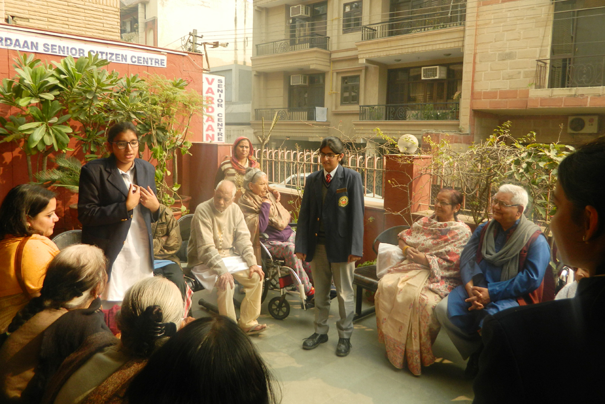

THE HOLISTIC DEVELOPMENT
The school aims to nurture children who are compassionate, respectful, caring and loving. It is the mission and vision of Dr (Mrs) Amita Chauhan,
Chairperson, Amity Group of Schools and RBEF that all our students, teachers, principals, parents and management synergise together in
thought and action in the common quest for self-discovery and self-learning. Regular interactions with influential dignitaries, activities like havan, recital
of shlokas, harmonious celebration of festive occasions, Spic Macay demonstrations, environment clubs, etc bring a multidimensional and holistic
framework to the school's curriculum.

home<<